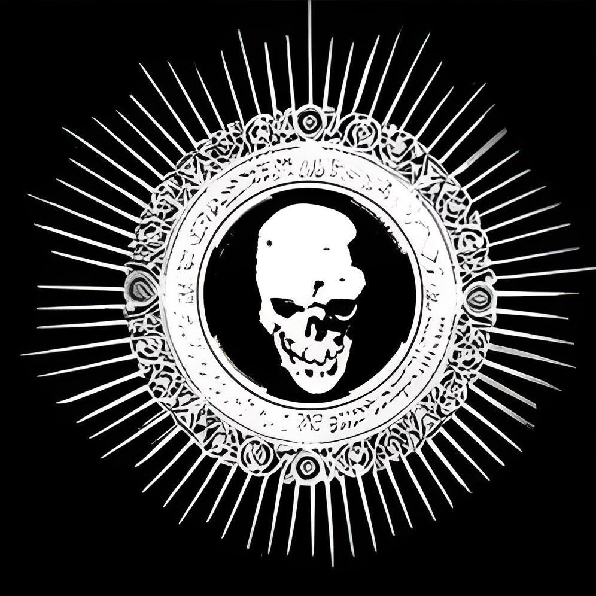
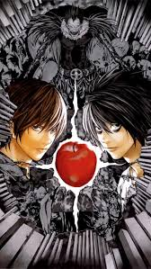

 Wiki Death Note |
INICIO | PERSONAGENS | MÍDIA | PRODUÇÃO | | |
 |
||
|
Death NoteO Death Note é um caderno sobrenatural de capa preta pertencente aos Shinigamis (deuses da morte) que possui o poder de tirar a vida de qualquer ser humano cujo nome seja escrito em suas páginas. Para que o caderno funcione, quem escreve precisa obrigatoriamente visualizar mentalmente o rosto da vítima, garantindo que pessoas com o mesmo nome não sejam afetadas. Se o usuário preencher apenas o nome do alvo, a pessoa morrerá de ataque cardíaco após exatamente 40 segundos. No entanto, o caderno oferece uma janela de tempo para especificar uma causa de morte diferente e mais 6 minutos e 40 segundos para descrever as circunstâncias e ações detalhadas que a vítima executará antes de morrer, desde que sejam fisicamente possíveis. O objeto tem páginas infinitas que nunca acabam, e o humano que tocar no caderno passa a ver e ouvir o Shinigami que era o dono original dele. A posse do caderno pode ser transferida ou abandonada voluntariamente, mas isso faz com que o humano perca instantaneamente todas as memórias relacionadas ao uso do artefato e às mortes causadas por ele. |
デスノート
(Desu Nōto) Gêneros Drama, Thriller Mangá Escrito por Tsugumi Ohba Ilustrado por Takeshi Obata Editoração Shueisha e lusófona BR Editora JBC PT Editora Devir Selo editorial Jump Comics Revista Weekly Shōnen Jump Demografia Shōnen Período de publicação 1 de janeiro de 2003 – 15 de maio de 2006 Volumes 12 (Lista de capítulos) |